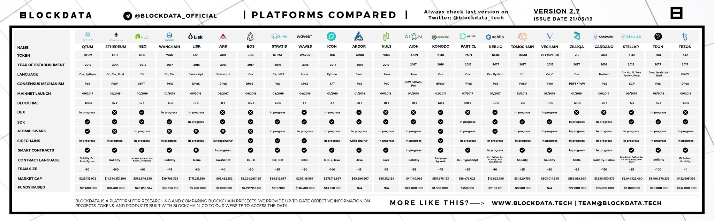

Виды блокчейн-сетей
Виды блокчейн-сетейБлокчейн-сети можно классифицировать по различным параметрам, таким как уровень доступа, управление и участники сети. Основные виды сетей включают публичные, частные и консорциумные блокчейны. Публичные и частные блокчейныПубличные блокчейны, такие как Bitcoin и Ethereum, открыты для всех участников. Любой может присоединиться к сети, проверять и добавлять блоки. Частные блокчейны, наоборот, ограничивают доступ только для определённых участников и чаще всего используются внутри организаций. Консорциумные блокчейныКонсорциумные блокчейны — это полузакрытые сети, в которых несколько организаций совместно управляют сетью. Этот тип блокчейна чаще всего используется в банковском секторе и других индустриях, где требуется совместное управление сетью между несколькими участниками. Примеры реальных сетей: Bitcoin, Ethereum, HyperledgerBitcoin и Ethereum — это примеры публичных блокчейн-сетей, где участники могут участвовать без разрешения. Hyperledger, с другой стороны, — это частная платформа, предназначенная для использования в корпоративных средах и управления закрытыми блокчейнами. Различия в уровне доступа и управления сетьюОсновное различие между видами блокчейн-сетей заключается в уровне доступа и управления. В публичных сетях доступен полный доступ для всех участников, в частных сетях доступ контролируется, а в консорциумных сетях контроль делится между группой участников. |
 |